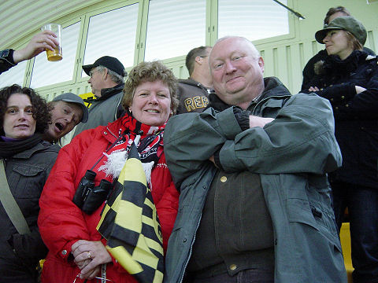

|
Roda JC - FC Utrecht (1-1) 21 oktober 2007
|
De wedstrijd begon met een toespraak van Servé Kuijer over de verdiensten van de
onlangs overleden oud-manager Hens Coerver voor de club Roda JC.

Onze CAFC-gasten uit Engeland zijn gewaardeerde mascottes. Nog nooit verloor
Roda een wedstrijd bij hun aanwezigheid.
Bijna 0-1 door Somers.
FC Utrecht krijgt de ene na de andere corner.
Na een overtreding van Pieters op Hadouir krijgt Roda een vrijetrap die genomen
wordt door Bodor.
Doelman Grandel lijkt de bal op te kunnen scheppen maar de indraaiende bal
verdwijnt in de uiterste hoek: 1-0, (27').
Naarmate de wedstrijd vordert krijgt Roda meer kansen. Utrecht lijkt rijp om
naar 'n
nederlaag gespeeld te worden, zeker als Matondo alleen voor de doelman verschijnt.
Zijn schot gaat echter hoog over.
Inderdaad....
Vlak voor rust speelt Sibum de bal panklaar in de benen van Lamah. Zijn schot
wordt met een prima reflex van Grandel overgetikt. De bevrijdende tweede treffer
wil
maar niet vallen.
In de tweede helft speelt Utrecht meer gedreven en voelt het publiek de
gelijkmaker
aankomen. Deze vrijetrap van ex-Roda JC'er Van Dijk gaat via de muur in de
handen van Castro.
Maar hier gebeurt het dan toch. Somers verlengt een afstandsschot van Pieters:
1-1, (61').
Even later wordt de bal ingekopt maar het doelpunt wordt vanwege vermeend
hinderen van de doelman
afgekeurd. Roda komt met de schrik vrij.
Er zijn nog aardig wat kansen om te scoren, maar het blijft 1-1.
Jammer, maar het plebs is toch tevreden.
Davy de Fauw met jeugdige fan.
Vincent Lachambre heeft nog een lange weg te gaan naar herstel.
Frank van Kouwen met jeugdige fan.
© Koempels Pleasure Dome
|